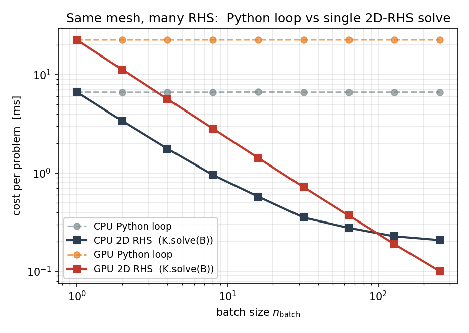
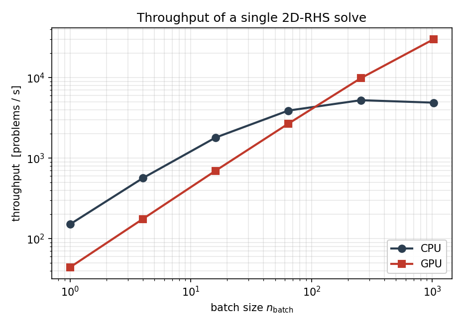

Batched Workflows¶
“Batched” means three different things in TensorMesh, and they operate at different layers of the pipeline. Picking the right one for your problem matters more than turning every knob at once. This chapter walks through the three axes, then gives the canonical “same mesh, many sources” recipe with end-to-end numbers measured on the development workstation.
Three axes of batching¶
Axis |
Where it lives |
When to reach for it |
|---|---|---|
Memory chunking |
|
One assembly that doesn’t fit in GPU memory. |
Batched right-hand sides |
|
Many loads, one mesh, one stiffness matrix. |
Multi-problem datasets |
ML training data: many |
What is not built in: vmap-style assembly that vectorises K
construction across many parameter values. If you need that, loop
in Python or wrap your assembler call in torch.vmap manually –
see What’s not built in below.
Axis 1 – Memory chunking with batch_size¶
A single ElementAssembler call holds the
per-element, per-quadrature-point integrand tensor in memory. For
fine meshes or high-order elements that tensor can be too large.
The batch_size argument splits the quadrature dimension into
chunks, accumulating the contribution one chunk at a time:
K = LaplaceElementAssembler.from_mesh(mesh)(batch_size=4)
The result is bit-identical (to machine precision) to the
un-chunked call – batch_size is purely a memory knob. Default
is -1 (no chunking, fastest if memory allows).
The figure below assembles the same operator on a quadratic-triangle
mesh with about \(1.9\times10^{5}\) nodes on the GPU, at quadrature
order 5 (\(n_q = 7\) points per element). Shrinking batch_size
from the full integrand down to one quadrature point at a time drops
peak memory from 810 MB to 271 MB – a 3x reduction – at
essentially no extra time:

Fig. 13 Assembly time (blue) and peak GPU memory (red) versus the
batch_size chunk knob on a quadratic triangle mesh
(185 973 nodes, \(n_q = 7\)). Peak memory falls from 810 MB
(un-chunked) to 271 MB (one quadrature point per chunk); every
setting produces a stiffness matrix that differs from the
un-chunked reference by less than \(2 \times 10^{-15}\) in
max-norm.¶
Two things temper the knob – and explain why a careless benchmark can look flat:
It only bites while
batch_size\(< n_q\). Sincen_batch = ceil(n_q / batch_size), anybatch_sizeat or above the quadrature-point count collapses to a single chunk – that is, no chunking at all. At the default quadrature order an order-2 triangle has only \(n_q = 3\) points, so there is very little room to chunk; raising the quadrature order (or using high-order / vector elements) grows the transient integrand and gives the knob more to work on – which is why the figure above uses order 5.There is a floor it cannot touch. The assembled matrix values, their
int64row/column index buffers, and the per-element accumulator[n_elem, n_basis, n_basis]are all proportional to the element count and stay resident regardless ofbatch_size. Chunking only pays off when the transient integrand[n_elem, n_q, n_basis, n_basis]is the dominant allocation; scaling up the mesh alone does not help, because the floor grows with it.
A typical recipe: start with the default; if you OOM, halve
batch_size (down to 1) until the assembly fits.
This axis has nothing to do with batching across problems. The result is one matrix, not a batch of matrices.
Note
batch_size chunks one assembly on a single device. When the
stiffness matrix is too large for one GPU even chunked, TensorMesh
also has a multi-GPU distributed assembly path – currently a
beta / research-grade feature; see
Distributed FEM for the building blocks. A
future release will align distributed assembly with the distributed
linear solver in torch-sla, closing the loop on truly
large-scale DOF counts end-to-end.
Axis 2 – Batched right-hand sides¶
When you have one stiffness matrix K and many load vectors
b_i, stack the loads into a single [n_dof, n_batch] tensor
and hand the whole block to K.solve in one call:
B = torch.stack([b_1, b_2, ..., b_64], dim=1) # [n_dof, 64]
X = K.solve(B) # [n_dof, 64]
SparseMatrix.solve delegates to torch-sla, which selects the
backend and method from the matrix properties and the device –
not from the shape of the RHS (a 1D and a 2D RHS take the same path).
For the condensed Poisson operator that means a direct
factorisation: SuperLU (scipy, method="lu") on the CPU, and
cuDSS on the GPU (method="cholesky" for an SPD matrix, "ldlt"
for a symmetric-indefinite one). With a direct method, passing a 2D RHS
lets the backend factor ``K`` once and back-substitute every
column – which is exactly the win you want here. The speedup over a
Python loop of independent solves is dramatic on both CPU and GPU, and
grows with n_batch until the back-substitution starts to dominate:
{kind=link}

Fig. 14 Per-problem cost on a 3014-node Poisson mesh: a Python loop
that calls tensormesh.sparse.SparseMatrix.solve() n_batch times
(dashed) versus a single 2D-RHS call (solid). On the GPU the
speedup reaches 225x at n_batch = 256.¶
The lesson reads cleanly off the figure. The loop is exactly
n_batch independent solves, so each tick on the x-axis
doubles its wall time. The 2D-RHS call factors K once and
amortises that cost across every column; on the GPU it stays
within \(\sim 15\%\) of the single-RHS time up to
n_batch = 256.
Note
The factor-once amortisation is a property of the direct
backends. If an iterative method runs instead – a very large GPU
problem routes to native-PyTorch CG, or you pass method="cg" /
"bicgstab" explicitly – torch-sla loops over the columns of
a 2D RHS internally, so there is no factorisation to reuse and the
only gain over a Python loop is reduced per-call dispatch overhead.
torch-sla does not yet cache iterative-solver state (a
preconditioner or Krylov basis reused across right-hand sides); a
caching iterative solver is planned for a future release. See
Sparse Solvers for how the backend and method are chosen.
Throughput is the same data the other way around – problems solved per second:
{kind=link}

Fig. 15 Throughput in problems per second. The CPU path saturates the
SuperLU back-substitution around \(5 \times 10^{3}\) problems
per second; the GPU keeps climbing to nearly
\(3 \times 10^{4}\) problems per second at
n_batch = 1024.¶
Condensation works the same way. condense_rhs()
accepts [n_dof, ...] shapes – the leading DOF axis is sliced
and the trailing axes pass through:
condenser = Condenser(mesh.boundary_mask)
K_, _ = condenser(K, torch.zeros(mesh.n_points))
B_inner = condenser.condense_rhs(B) # [n_inner, 64]
X_inner = K_.solve(B_inner) # [n_inner, 64]
X_full = condenser.recover(X_inner) # [n_dof, 64]
This is the workhorse pattern for ML training-data generation and for parametric studies where every problem shares the geometry.
Axis 3 – Multi-problem datasets¶
For ML workloads where you want many (input, output) pairs,
tensormesh.dataset bundles two things:
MeshGen– programmatic Gmsh-backed mesh generation from CSG primitives (rectangles, circles, holes, …).Multi-frequency equation classes that emit batched source terms with known analytical solutions, for supervised training:
PoissonMultiFrequency(and…3D)LinearElasticityMultiFrequency(and…3D)
Each …MultiFrequency class samples random Fourier coefficients
for the source term and – where applicable – returns the
analytical solution at the same nodes, which is convenient for both
training and validation.
The standard “same mesh, varying source” recipe combines this generator with the batched-RHS pattern from Axis 2:
import torch
from tensormesh import Mesh, LaplaceElementAssembler, MassElementAssembler, Condenser
from tensormesh.dataset import PoissonMultiFrequency
device = "cuda" if torch.cuda.is_available() else "cpu"
mesh = Mesh.gen_rectangle(chara_length=0.02).to(device)
K = LaplaceElementAssembler.from_mesh(mesh)().double()
M = MassElementAssembler.from_mesh(mesh)().double()
condenser = Condenser(mesh.boundary_mask)
K_, _ = condenser(K, torch.zeros(mesh.n_points, device=device))
# 1024 random Poisson source terms, all evaluated at the same nodes.
eq = PoissonMultiFrequency(a=torch.rand(1024, 8, 8, device=device) * 2 - 1)
f = eq.source_term(mesh.points, domain="rectangle").double() # [1024, n_points]
b = M @ f.T # [n_points, 1024]
b_ = condenser.condense_rhs(b) # [n_inner, 1024]
u_ = K_.solve(b_) # [n_inner, 1024]
u = condenser.recover(u_) # [n_points, 1024]
On a single RTX PRO 6000 the loop above produces 1024 Poisson
solutions in roughly 34 ms (see the throughput figure above) –
about \(30\,\mu\mathrm{s}\) per problem, dominated by the
cuDSS triangular back-substitution. The fully benchmarked driver, with timing
across many n_batch values, lives in
examples/dataset/poisson/poisson_dataset.py.
For varying mesh workflows, regenerate Mesh per problem and
pay the assembly cost each time – there is no shortcut for that
case today.
What’s not built in¶
There is no built-in vmap-style assembler that vectorises
K construction across many parameter values (e.g. one K
per realisation of a stochastic coefficient field). For now two
patterns work in user code:
Python loop – simplest, fine when assembly is cheap relative to solve.
``torch.vmap`` around the assembler call – works when the varying parameter enters via
point_dataorelement_dataand the result is uniform in shape. Note thatvmap’s interaction with sparse output is fragile; test on small problems first.
A first-class batched-assembly API may show up in a future release; the dataset workflow above covers the most common case (same mesh, many sources) without it.
Reproducing the numbers¶
All three figures on this page come from a single script:
python docs/scripts/batched_workflows_figures.py
It uses only the public API and runs on CPU alone (the GPU panels
are skipped on a CPU-only machine). On a CUDA host it writes
batched_rhs_scaling.png, throughput.png, and
memory_chunking.png into
docs/source/_static/user_guide/batched_workflows/.
What’s next¶
Sparse Solvers – the backend / method auto-selection and the
backendknobs that affect batched solves.Differentiability – backprop through a batched pipeline.
Time Integration – transient problems where the inner solve at every time step is itself batched-RHS-shaped.